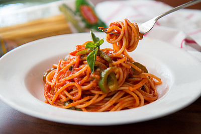

Calzone
A calzone is an Italian oven-baked folded pizza, often described as a turnover, made with leavened dough. It originated in Naples in the 18th century.

Pizza
Pizza is a dish of Italian origin consisting of a usually round, flat base of leavened wheat-based dough topped with tomatoes, cheese, and often various other ingredients, which is then baked at a high temperature, traditionally in a wood-fired oven. A small pizza is sometimes called a pizzetta.

Pasta
Pasta is a type of food typically made from an unleavened dough of wheat flour mixed with water or eggs, and formed into sheets or other shapes, then cooked by boiling or baking.